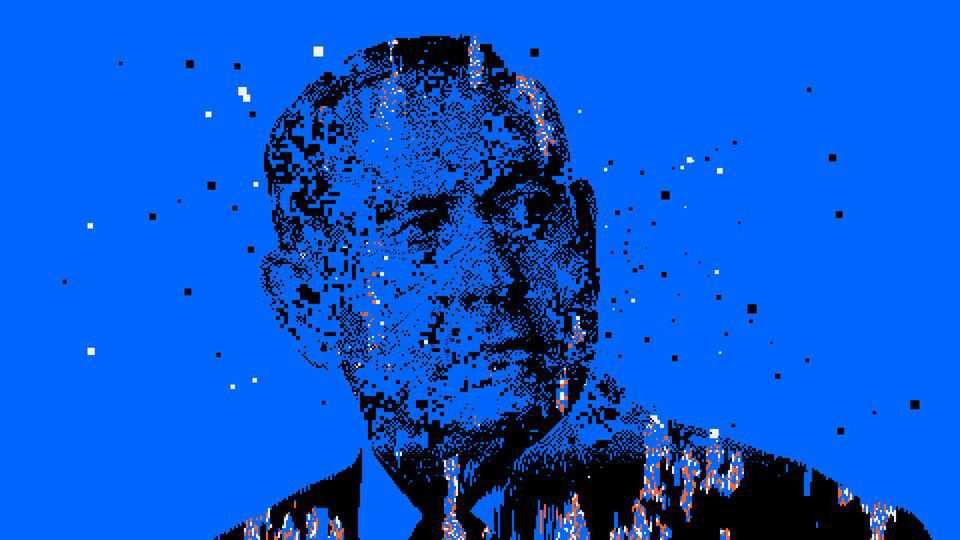

Artificial intelligence is coming for Israel’s voters
Governments and voters elsewhere should be watching
Oct 1st 2026
THE FIRST meeting in a decade between an Israeli prime minister and a Palestinian president was a historic scene. The smiles looked real. But the encounter was not. Gadi Eisenkot is the front-runner in Israel’s election, not the country’s prime minister. And he has yet to meet Mahmoud Abbas, the Palestinians’ ageing ruler.
The realistic-looking footage of the faux-summit purporting to show Mr Eisenkot embracing Mr Abbas was produced by Religious Zionism, a hard-right party led by Bezalel Smotrich, Israel’s finance minister and an ally of Binyamin Netanyahu, its prime minister. It was aimed at convincing voters that Mr Eisenkot, a tough ex-general hoping to replace Mr Netanyahu in Israel’s parliamentary election on October 27th, is actually a dangerous left-winger prepared to reconcile with Israel’s enemies.
Fake though it was, the video still made history. On July 26th it became Israel’s first campaign ad to fall foul of a law that requires all such materials created using artificial intelligence to be labelled as such. The Central Election Committee (CEC) ordered Religious Zionism to take it down.
Since then, declarations about the use of AI have become ubiquitous in the corner of every screen. “But the visible content, the fake videos are not the main concern,” argues Karine Nahon, an Israeli information scientist who writes about disinformation and threats to democracy. “They’re easy to spot. What’s much more threatening is the way AI is being used beneath the surface to slant information and to monitor and manipulate voters.” All sides are using advanced methods of AI-boosted persuasion and manipulation. Israel prides itself on the way others adopt the innovations of its arms and tech industry; could the same prove true in election battles?
Mr Netanyahu’s coalition of ultranationalist and religious parties is lagging behind the centre-left in polls. But the prime minister has one key advantage: his partners are united behind him. “Mr Netanyahu and his allies have been investing in election tech for years and have highly developed databases, and the parties of his bloc share voter information,” says one tech industry insider. Over the past three years the Israeli government has invested vast sums in online psychological warfare, using AI tools to try to influence audiences in the Middle East and in the West. Some are now being used domestically.
Mr Eisenkot’s party, Yashar, was founded just a year ago, and the opposition is generally divided. Yet those hoping to replace Mr Netanyahu are backed by a network of anti-government protest groups deeply rooted in Israel’s tech sector. “Most tech professionals support the opposition and feel they’re fighting for their future in Israel,” adds the insider. “We’re going to see them fighting fire with fire.”
Israeli tech outfits have developed swarms of bots masquerading as human voters. These can push conversations online towards views advantageous to whoever controls them. Bots can also be hired to vote in online polls. These are neither as statistically reliable nor as well regarded as mainstream polls but they generate headlines which can influence wavering voters.
More sophisticated are avatars, created by AI, but with actual phone numbers and even credit cards. These can express complex opinions and infiltrate groups, especially on WhatsApp, where users do not expect to encounter artificial actors.
“The most hidden aspect of the campaigns is the automation of persuasion,” says Tehilla Shwartz-Altshuler, an expert on law and technology at the Israel Democracy Institute in Jerusalem. “AI is picking up every breadcrumb available on voters, including their viewing and music preferences. They’re also being geolocated, to work out where they may be on election day.” AI-generated messaging is being adapted for individual voters in the form of online advertisements, text messages and increasingly lifelike robocalls, supposedly from candidates. Your correspondent recently answered one such call and only realised the politician talking to him was an AI agent after a couple of sentences.
Politicians expect many Israelis, especially younger ones, to consult chatbots about who to vote for. “We’re seeing inauthentic networks creating a wide range of digital assets designed to manipulate the algorithms of chatbots and AI-powered search engines,” says Nir Rozen, the head of FakeReporter, an NGO fighting disinformation. “Some of this content includes fake interviews with politicians, but there’s genuine information mixed in as well, flooding the information sources that voters rely on.” Parties are scrambling to publish content on platforms that chatbots draw on heavily. “We’ve been posting all our old stuff on Reddit because ChatGPT uses it,” says one political activist.
It is not clear whose job it is to stop any of this. The internal security service, the Shin Bet, appears to be willing only to try to prevent foreign meddling, though its mandate is a broad one of protecting Israel’s fragile democracy. Nor does the National Cyber Directorate in the prime minister’s office seem prepared to get involved. That leaves the police, with its limited resources, and the CEC, with its few powers, to patrol this wild new frontier.
For now the committee’s most powerful tool is its relationships with the main internet companies. They generally heed the CEC’s demands to remove dodgy content. Many big international tech firms have research centres in Israel. They are aware that parties and campaigners elsewhere will study this election for lessons.
Government officials and privacy activists claim that the tech companies have so far been quick to deal with issues they flag. But doing so on election day itself, in time to prevent any false reports or manipulation from affecting voting, will be harder. Much of the information being illicitly collected is for get-out-the-vote operations on election day, which is a public holiday. Knowing who their voters might be and what they might be doing on their day off is a key advantage for political parties. Knowing who isn’t likely to vote for them can also be useful; such voters can be sent offers for shops or entertainment venues far from their polling station, or fake news about disturbances in their area.
The Supreme Court and the chairman of the CEC have ruled that the parties’ observers at the polling stations will not be permitted to tell their bosses who has already voted. In previous elections this has been allowed and has been central to tracking voters on election day and getting supporters to the ballot box. Regulating such activities is tricky. “There’s a very narrow line between freedom of expression and censorship, and we exercise discretion,” says Dean Livne, the acting director-general of the CEC. “I don’t think we’re at the stage yet where we have to get involved with AI engines.” At the rate AI is evolving, that may have to change soon. ■